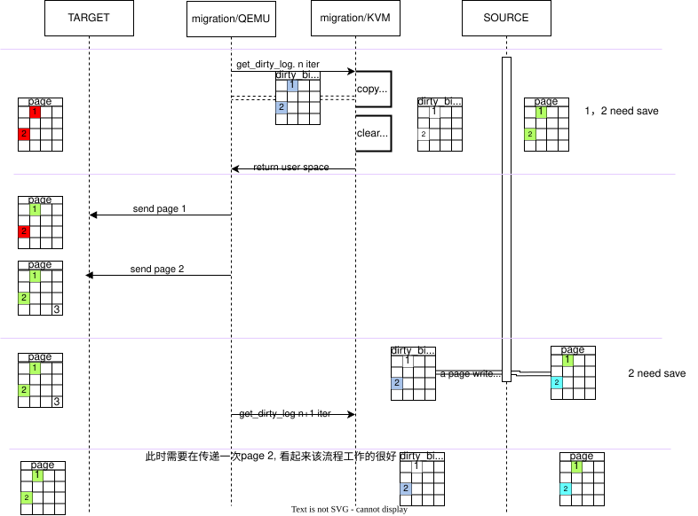
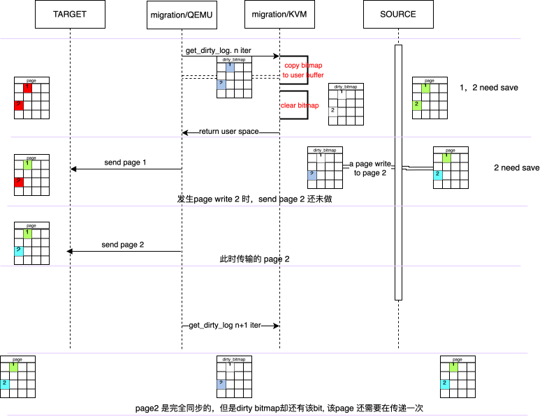
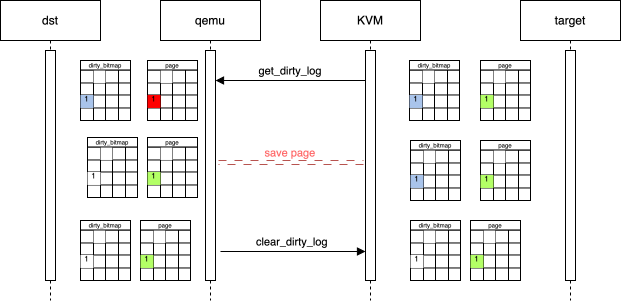
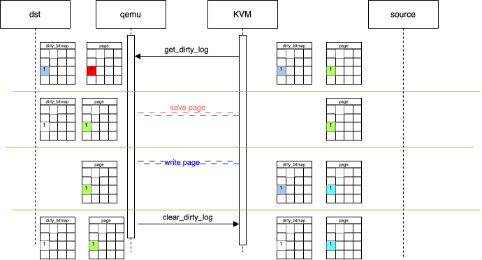
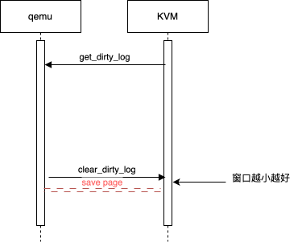

dirty-bitmap
ORG PATCH
我们来看下最初的KVM实现了哪些功能。最初的KVM代码，是基于shadow page table, 支持了dirty_bitmap. 我们从几个方面看下dirty_bitmap实现:
- kernel data struct
- USER API
- lock Contention Analysis
kernel data struct
并支持了dirty_bitmap, 同样是定义在了memslot结构体中，每个slot一个 dirty_bitmap
1
2
3
4
5
6
7
struct kvm_memory_slot {
gfn_t base_gfn;
unsigned long npages;
unsigned long flags;
struct page **phys_mem;
unsigned long *dirty_bitmap;
};
该dirty_bitmap保存了该slot中所有物理页是否是dirty的。
USE API
提供了dev_ioctl方法KVM_GET_DIRTY_LOG:
1
2
3
4
kvm_dev_ioctl
=> case KVM_GET_DIRTY_LOG
=> copy user param kvm_dirty_log
=> kvm_dev_ioctl_get_dirty_log
kvm_dirty_log定义如下:
1
2
3
4
5
6
7
8
struct kvm_dirty_log {
__u32 slot;
__u32 padding;
union {
void __user *dirty_bitmap; /* one bit per page */
__u64 padding;
};
};
- slot: slot id
- padding: 为了让 dirty_bitmap 64bit 对齐? 还是为了之后有其他扩展
- dirty_bitmap: copy kernel bitmap to this
kvm_dev_ioctl_get_dirty_log具体函数流程:
1
2
3
4
5
6
7
8
9
10
11
12
13
14
15
16
kvm_dev_ioctl_get_dirty_log
# get memslot by slot id
=> memslot = &kvm->memslots[log->slot];
# copy kernel dirty_bitmap to user
=> copy_to_user(log->dirty_bitmap, memslot->dirty_bitmap, n)
# set pte WP
=> spin_lock(&kvm->lock)
=> kvm_mmu_slot_remove_write_access(kvm, log->slot);
=> spin_unlock(&kvm->lock)
# clear dirty_bitmap
=> memset(dirty_bitmap, 0, n)
# flush tlb
=> foreach(vcpu)
=> vcpu_load()
=> tlb_flush(vcpu)
=> vcpu_put()
主要的工作如下:
- 将kernel 中 对应memslot dirty_bitmap copy到 user oparam
- 将 slot 中所有shadow page table 都标记为 WP
- clear kernel dirty bitmap
- 因为2中会涉及到页表修改, 所以需要flush tlb
这里会和page fault的流程有race. 我们先展开mmu page fault 的流程
1
2
3
4
5
6
7
8
9
10
handle_exception
=> spin_lock(&vcpu->kvm->lock);
=> paging64_page_fault
=> paging64_fix_write_pf
=> mark_page_dirty()
# shadow pte clear WP(mask writeable)
# guest pte mask dirty
=> shadow_ent |= PT_WRITEABLE_MASK
=> guest_ent |= PT_DIRTY_MASK
=> spin_unlock(&vcpu->kvm->lock);
我们来看下该流程是否有问题。
1
2
3
4
5
6
7
8
9
10
11
12
kvm_dev_ioctl_get_dirty handle_exception
----------------------------------------------
copy dirty bitmap
spinlock
set WP
spinunlock
spinlock
mask_dirty to dirty bitmap
clear_dirty_bitmap
clear WP
spinunlock
这么看似乎有点问题.
NOTE
但是这个逻辑似乎一直没有更改，不知道自己是否推断的有些问题
avi 在 https://lkml.org/lkml/2012/2/1/140 也似乎提到了这个问题， 那当前的版本难道是，如果进入了kvm_dev_ioctl_get_dirty, vcpu 没有running的？
引入EPT
引入EPT之后，其EPT page table， 就类似于shadown pgtable, 我们在get_dirty_log时, 需要向EPT pte set WP.
1
2
3
4
5
6
7
8
9
kvm_vm_ioctl_get_dirty_log
=> down_write(&kvm->slots_lock);
=> kvm_mmu_slot_remove_write_access
=> search_all_ept_pagetable
=> if in ept_pgtable in this slot
=> SET WP
=> kvm_flush_remote_tlbs()
=> memset(memslot->dirty_bitmap, 0, n)
=> up_write(&kvm->slots_lock);
这个过程中并没有引入任何锁!!!
如果guest因为WP而触发EPT violation，调用路径如下：
1
2
3
4
5
6
7
8
9
10
11
12
13
14
15
tdp_page_fault
=> spin_lock(&vcpu->kvm->mmu_lock);
=> __direct_map
=> mmu_set_spte(, pte_access=ACC_ALL,)
## __direct_map中认为shadow pgtable有全部权限，对于EPT来说，
## guest权限由guest pgtable来管理即可。无需shadow pgtable(ept
## pgtable控制
=> if pte_access & ACC_WRITE_MASK
## 设置 PT_WRITEABLE_MASK(clear WP)
=> spte |= PT_WRITEABLE_MASK
## set bitmap
=> mark_page_dirty
## update spte
=> set_shadow_spte(, spte)
=> spin_unlock(&vcpu->kvm->mmu_lock);
过程和之前类似，就是不知道在kvm_vm_ioctl_get_dirty_log中为什么两 者不再有临界区了。
而在kvm_vm_ioctl_get_dirty_log中使用kvm->slots_lock down_write sem, 可能表示在此过程中，要modify dirty_bitmap, 但是为什么在 mark_page_dirty上下文不需要呢?
但是这个slots_lock可能在vcpu线程的多个上下文中会down_read(), 可能导致 get_dirty_log的流程影响到vcpu线程, 典型如:
1
2
3
4
5
6
7
__vcpu_run
down_read(slots_lock)
vcpu_enter_guest
up_read(slots_lock)
kvm_x86_ops->run() ## vmx_vcpu_run
down_read(slots_lock)
up_read(slots_lock)
而在链接convert slotslock to SRCU 中，AVI提到， 在没有引入srcu时，似乎在64 smp vm(比较多核的虚拟机)中会遇到拿锁很高的情况。
1
2
3
4
5
6
7
8
9
10
11
12
13
14
15
16
17
18
19
20
21
22
23
24
25
26
27
28
29
30
31
32
33
34
_raw_spin_lock_irq
|
--- _raw_spin_lock_irq
|
|--99.94%-- __down_read
| down_read
| |
| |--99.82%-- 0xffffffffa00479c4
| | 0xffffffffa003a6c9
| | vfs_ioctl
| | do_vfs_ioctl
| | sys_ioctl
| | system_call
| | __GI_ioctl
| --0.18%-- [...]
--0.06%-- [...]
40.57% qemu-system-x86 [kernel] [k]
_raw_spin_lock_irqsave
|
--- _raw_spin_lock_irqsave
|
|--99.88%-- __up_read
| up_read
| |
| |--99.82%-- 0xffffffffa0047897
| | 0xffffffffa003a6c9
| | vfs_ioctl
| | do_vfs_ioctl
| | sys_ioctl
| | system_call
| | __GI_ioctl
| --0.18%-- [...]
--0.12%-- [...]
在这种情况下, vcpu 即便是idle的，也会大量消耗cpu。原因未知。(没有想通, 为什么down_read会造成如此高的负载, 看代码也没有频繁的down_write代码路径)
随着srcu在kernel中应用。KVM 可以用srcu 避免read操作所带来的开销。 （但是这块没有太看懂，有很多疑惑, 我们先过下代码)
srcu get_dirty_log
关于 srcu 我们这里只关注下 kvm_vm_ioctl_get_dirty_log()实现:
1
2
3
4
5
6
7
8
9
10
11
12
13
14
15
kvm_vm_ioctl_get_dirty_log
=> down_write(kvm->slots_lock)
=> new a dirty_bitmap: dirty_bitmap # 新创建一个dirty_bitmap
=> memset(dirty_bitmap) # 清零
=> spin_lock(mm_lock)
=> kvm_mmu_slot_remove_write_access # 清 write access
=> spin_unlock(mm_lock)
=> new a memslots: slots
=> copy kvm->memslots => slots(new) # 新创建slots，让其copy old_slots
=> slots->memslots[].dirty_bitmap = dirty_bitmap # 赋值clear的dirty_bitmap
=> old_slots = kvm->memslots
=> rcu_assign_pointer(kvm->memslots, slots) # rcu update pointer
=> synchronize_srcu_expedited # wait grace period expedited
=> copy_to_user(old_slots->memslots[].dirty_map)
=> up_write(kvm->slots_lock)
似乎，并没有删除slots_lock, 但是, 该操作，确实解决了上面说的dirty bitmap的丢失问题
1
2
3
4
5
6
7
8
9
10
11
12
13
14
15
16
kvm_vm_ioctl_get_dirty_log VCPU0
spinlock
SET WP
spinunlock
spinlock
mask_dirty to dirty bitmap
rcu_deference(memslots)
clear WP
spinunlock
get old memslots pointer
rcu assign new kvm memslots
with dirty_bitmap clear
wait gp
copy old memslots to user
因为上面使用了srcu，这样就导致，vcpu0的更新 dirty_bitmap一定会落到 old memslots pointer 锁指向的 memslots中。这样做的好处是，无需将一些对memslots更改的流程放到临界区, 影响reader 效率。但是由于是srcu，我们期望保证get_dirty_log效率，所以这里使用的是synchronize_srcu_expedited interface
但是后来Peter Z 推了一个改动，似乎让synchronize_srcu_expedited的速度变慢了， 这样就会导致, get log接口，会变慢，从而可能增加guest migration 线程处理脏页速度， 以及downtime.
avi 在link 中提到，可不可以用atomic clear 的方式，替代srcu。 并且Takuya Yoshikawa 在link 中测试了一个草稿，感觉效果还不错。我们来看下最终的patch改动
srcu-less get_dirty_log
1
2
3
4
5
6
7
8
9
10
11
12
13
14
15
16
17
18
19
20
21
22
23
24
25
26
27
28
29
30
31
=> kvm_vm_ioctl_get_dirty_log
=> for_each dirty_bitmap[i] in memslot->dirty_bitmap
=> get a new dirty_bitmap
=> dirty_bitmap_buffer = dirty_bitmap + n / sizeof(long);
=> memset(dirty_bitmap_buffer, 0, n);
=> spin_lock(&kvm->mmu_lock);
=> foreach every long in dirty_bitmap
=> continue if dirty_bitmap[] == 0
=> mask = xchg(dirty_bitmap[],0)
=> dirty_bitmap_buffer[] = mask
=> kvm_mmu_write_protect_pt_mask(mask)
{
unsigned long *rmapp;
while (mask) {
# 获取first set bit
# 找到其rmapp, 通过rmapp, 让spte WP
rmapp = &slot->rmap[gfn_offset + __ffs(mask)];
__rmap_write_protect(kvm, rmapp, PT_PAGE_TABLE_LEVEL);
# clear first set bit
/* clear the first set bit */
mask &= mask - 1;
}
} # kvm_mmu_write_protect_pt_mask end
=> spin_unlock(&kvm->mmu_lock);
# mark_page_dirty流程
mark_page_dirty
=> mark_page_dirty_in_slot
=> set_le_bit(gfn, bitmap)
将srcu删除，替换成了atomic操作(xchg). 这样可以让 mark_page_dirty 在不加mmu_lock的场景下执行，虽然tdp_page_fault在执行__direct_map 时，还是全程加着mmu_lock
但是全程在tdp_page_fault流程中，全程加着spin_lock(mmu_lock), 是不是 不合理呢？
为此 xiaoguangrong 在[6]中提出了fast path，可以让因wp触发的 ept violation 可以在不加mmu_lock的情况下fix。
patch 很大，我们简单分析(而且很多还不太明白, 不得不说，什么代码只要带着 shadow pgtable, 就非常…..)
KVM: MMU: fast page fault
1
2
3
4
5
6
7
8
tdp_page_fault
=> fast_page_fault
=> some if xxx
=> goto not fast
=> fast_pf_fix_direct_spte
=> get_gfn
=> if (cmpxchg64(sptep, spte, spte | PT_WRITABLE_MASK) == spte)
=> mark_page_dirty(vcpu->kvm, gfn);
这里有一些判断条件，只有判断满足一定条件，才会走fast path.条件包含哪些呢? 我们来看下commit message
commit message
1
2
3
4
5
6
7
8
9
10
11
12
13
14
15
16
17
18
19
20
21
22
23
24
25
26
27
28
29
30
31
32
33
34
35
36
37
38
39
40
41
42
43
44
45
46
47
48
49
50
51
52
53
54
55
56
57
58
59
60
61
62
If the the present bit of page fault error code is set, it indicates
the shadow page is populated on all levels, it means what we do is only
modify the access bit which can be done out of mmu-lock
> 如果页面page fault error code的 "present" 位被设置，表示影子页表在所有级
> 别上都已填充，这意味着我们所做的只是修改access位，而这可以在不持有 mmu-lock
> 的情况下完成。
The tricks in this patch is avoiding the race between fast page fault
path and write-protect path, write-protect path is a read-check-modify
path:
> tricks: 技巧
>
> 这个补丁中的技巧是避免快速页面故障路径和写保护路径之间的竞争。
> write-protect路径是一个read-check-modify 的路径：
read spte, check W bit, then clear W bit. What we do is populating a
identification in spte, if write-protect meets it, it modify the spte
even if the spte is readonly. See the comment in the code to get more
information
> 读取 SPTE，检查 W 位，然后清除 W 位。我们所做的是在 SPTE 中填充一个标识符，
> 如果写保护遇到它，即使 SPTE 是只读的，它也会修改 SPTE。更多信息可以查看代码
> 中的注释。
* Advantage
- it is really fast
it fixes page fault out of mmu-lock, and uses a very light way to avoid
the race with other pathes. Also, it fixes page fault in the front of
gfn_to_pfn, it means no host page table walking.
它在不持有 MMU 锁的情况下修复页错误，并使用非常轻量的方法来避免与其他路径的竞争。
此外，它在 gfn_to_pfn 之前修复页错误，这意味着不需要遍历主机页表。
- we can get lots of page fault with PFEC.P = 1 in KVM:
- in the case of ept/npt
after shadow page become stable (all gfn is mapped in shadow page table,
it is a short stage since only one shadow page table is used and only a
few of page is needed), almost all page fault is caused by write-protect
(frame-buffer under Xwindow, migration), the other small part is caused
by page merge/COW under KSM/THP.
> 在影子页表变得稳定之后（所有的 gfn 都已经映射到影子页表中，这个阶段很短，
> 因为只使用一个影子页表且只需要少量的页），几乎所有的页错误都是由于写保护引
> 起的（例如在 X 窗口下的帧缓冲区或迁移时）。剩下的一小部分页错误是由于在
> KSM（内存合并）或 THP（透明大页）下的页合并/写时复制（COW）导致的。
We do not hope it can fix the page fault caused by the read-only host
page of KSM, since after COW, all the spte pointing to the gfn will be
unmapped.
> 我们并不期望它能解决由 KSM 的只读主机页引起的页错误，因为在写时复制
> （COW）之后，所有指向该 gfn 的影子页表条目（spte）都会被取消映射。
- in the case of soft mmu
- many spurious page fault due to tlb lazily flushed
> 由于 TLB（翻译后备缓冲区）延迟刷新，导致出现许多虚假的页错误。(out-of-sync)
- lots of write-protect page fault (dirty bit track for guest pte, shadow
page table write-protected, frame-buffer under Xwindow, migration, ...)
> 许多写保护页错误（用于跟踪客户机 PTE 的脏位、影子页表被写保护、X 窗口下的
> 帧缓冲区、迁移等）。
这里提到的，如果P flag is set，那比较容易simple fixed，page fault，之前 已经做过对 fast mmio path 的处理: EFFC.P=1 && EFFC.RSV=1
而作者之后要fix的，就是除了上面的其他情况
对于EPT而言，主要有两个:
- 因migration/Xwindow frame-buffer 导致的WP
- KSM
第二种作者不想simple fix, gfn相关的spte 在cow之后，可能会被umap
影子页表比较复杂，主要有:
- out-of-sync
- 很多的WP page fault
- track guest page dirty
- shadow pgtable WP
- migration
- Xwindow frame buffer
1
2
3
4
5
6
7
8
9
10
11
12
13
14
15
16
17
18
19
20
21
22
23
24
25
26
27
28
29
30
31
32
33
34
35
36
37
38
39
40
41
42
43
44
45
46
* Implementation
We can freely walk the page between walk_shadow_page_lockless_begin and
walk_shadow_page_lockless_end, it can ensure all the shadow page is valid.
在 walk_shadow_page_lockless_begin 和 walk_shadow_page_lockless_end 之间，
我们可以自由地遍历页表，这可以确保所有的影子页都是有效的。
In the most case, cmpxchg is fair enough to change the access bit of spte,
but the write-protect path on softmmu/nested mmu is a especial case: it is
a read-check-modify path: read spte, check W bit, then clear W bit. In order
to avoid marking spte writable after/during page write-protect, we do the
trick like below:
在大多数情况下，使用 cmpxchg（比较并交换）来修改影子页表条目（spte）的访问位
已经足够。然而，在softmmu/nested MMU 上的写保护路径是一个特殊情况：
这是一个read-check-modify路径：
read spte，check W bit，然后clear W bit。
为了避免在页写保护之后或期间错误地将 spte 标记为可写，我们采取以下技巧：
fast page fault path:
lock RCU
set identification in the spte
smp_mb()
if (!rmap.PTE_LIST_WRITE_PROTECT)
cmpxchg + w - vcpu-id
unlock RCU
write protect path:
lock mmu-lock
set rmap.PTE_LIST_WRITE_PROTECT
smp_mb()
if (spte.w || spte has identification)
clear w bit and identification
unlock mmu-lock
Setting identification in the spte is used to notify page-protect path to
modify the spte, then we can see the change in the cmpxchg.
> 在影子页表条目（spte）中设置标识用于通知写保护路径以修改 spte，
> 这样我们就可以在 cmpxchg 操作中看到变化。
Setting identification is also a trick: it only set the last bit of spte
that does not change the mapping and lose cpu status bits.
> 设置标识也是一种技巧：它仅设置 spte 的最后一位，这不会改变映射，
> 也不会丢失 CPU 状态位。
NOTE
patch理解起来较困难，需要进一步学习, 我们下面简单列举下代码
1
2
3
4
5
tdp_page_fault
=> fast_page_fault
=> fast_pf_fix_direct_spte
=> if (cmpxchg64(sptep, spte, spte | PT_WRITABLE_MASK) == spte)
=> mark_page_dirty
split retrieval and clearing of dirty log
1
2
3
4
5
6
7
8
9
10
11
12
13
14
15
16
17
18
19
20
21
22
23
24
25
26
27
28
29
30
31
32
33
34
35
36
37
38
39
40
41
42
43
44
45
46
There are two problems with KVM_GET_DIRTY_LOG. First, and less important,
it can take kvm->mmu_lock for an extended period of time. Second, its user
can actually see many false positives in some cases. The latter is due
to a benign race like this:
1. KVM_GET_DIRTY_LOG returns a set of dirty pages and write protects
them.
2. The guest modifies the pages, causing them to be marked ditry.
3. Userspace actually copies the pages.
4. KVM_GET_DIRTY_LOG returns those pages as dirty again, even though
they were not written to since (3).
KVM_GET_DIRTY_LOG 存在两个问题。
首先（虽然不太重要），它可能会长时间持有 kvm->mmu_lock。其次，在某些情况
下，用户实际上可能会看到许多误报。后者是由于以下良性竞争条件导致的：
1. KVM_GET_DIRTY_LOG 返回一组脏页并对其进行写保护。
2. guest 修改了这些页面，使其被标记为脏。
3. 用户空间实际复制了这些页面。
4. KVM_GET_DIRTY_LOG 再次将这些页面返回为脏，即使自步骤（3）之后它们并
未被写入。
This is especially a problem for large guests, where the time between
(1) and (3) can be substantial. This patch introduces a new
capability which, when enabled, makes KVM_GET_DIRTY_LOG not
write-protect the pages it returns. Instead, userspace has to
explicitly clear the dirty log bits just before using the content
of the page. The new KVM_CLEAR_DIRTY_LOG ioctl can operate on a
64-page granularity rather than requiring to sync a full memslot.
This way the mmu_lock is taken for small amounts of time, and
only a small amount of time will pass between write protection
of pages and the sending of their content.
> 这在大型客户机中尤其是个问题，因为步骤（1）和（3）之间的时间可能很长。
> 这个补丁引入了一种新功能，当启用时，使 KVM_GET_DIRTY_LOG 不再写保护它
> 返回的页面。相反，用户空间必须在使用页面内容之前显式清除脏日志位。新
> 的 KVM_CLEAR_DIRTY_LOG ioctl 可以以 64 页的粒度操作，而不需要同步整个
> 内存槽。这样，mmu_lock 只会被短暂持有，并且在页面写保护和发送其内容之
> 间只会经过很短的时间。
This is entirely implemented in generic code, but only users of
kvm_get_dirty_log_protect get the support (that is x86_64, ARM and MIPS).
> 这一功能完全在通用代码中实现，但只有使用 kvm_get_dirty_log_protect
> 的用户（即 x86_64、ARM 和 MIPS）才能获得支持。
主要改动有几个方面:
- 增加
KVM_CAP_MANUAL_DIRTY_LOG_PROTECT - modify
kvm_get_dirty_log_protect - add
kvm_clear_dirty_log_protect
首先我们看下CAP部分, 在Documentation/virtual/kvm/api.txt新增解释:
1
2
3
4
5
6
7
8
9
10
11
12
13
14
15
16
17
18
19
20
21
22
23
24
25
26
27
28
29
30
31
32
33
34
35
36
7.18 KVM_CAP_MANUAL_DIRTY_LOG_PROTECT
Architectures: all
Parameters: args[0] whether feature should be enabled or not
With this capability enabled, KVM_GET_DIRTY_LOG will not automatically
clear and write-protect all pages that are returned as dirty.
Rather, userspace will have to do this operation separately using
KVM_CLEAR_DIRTY_LOG.
At the cost of a slightly more complicated operation, this provides better
scalability and responsiveness for two reasons. First,
KVM_CLEAR_DIRTY_LOG ioctl can operate on a 64-page granularity rather
than requiring to sync a full memslot; this ensures that KVM does not
take spinlocks for an extended period of time. Second, in some cases a
large amount of time can pass between a call to KVM_GET_DIRTY_LOG and
userspace actually using the data in the page. Pages can be modified
during this time, which is inefficint for both the guest and userspace:
the guest will incur a higher penalty due to write protection faults,
while userspace can see false reports of dirty pages. Manual reprotection
helps reducing this time, improving guest performance and reducing the
number of dirty log false positives.
参数：args[0] 指示是否应启用该功能。
启用此功能后，KVM_GET_DIRTY_LOG 将不会自动清除并写保护所有返回为脏
的页面。相反，用户空间需要使用 KVM_CLEAR_DIRTY_LOG 单独执行此操作。
尽管操作稍微复杂了一些，但这提供了更好的可扩展性和响应性，原因有两个。
首先，KVM_CLEAR_DIRTY_LOG ioctl 可以以 64 页的粒度操作，而不需要同步
整个memslot；这确保了 KVM 不会长时间持有自旋锁。其次，在调用
KVM_GET_DIRTY_LOG 和用户空间实际使用页面中的数据之间，可能会经过很长
时间。在此期间，页面可能被修改，这对客户机和用户空间来说都是低效的：
客户机将因为写保护错误而遭受更高的惩罚，而用户空间可能会看到脏页的错
误报告。手动重新保护有助于缩短这段时间，提高客户机性能并减少脏日志的
误报数量。
我们来用图看下为什么要，做get /clear 接口分离:
图示展开
此时迁移两个页，看起来工作的不错:
第二轮get_dirty_log bitmap, 恰好能表示source target两端页dirty状态

下面的情况，由于脏页似乎比较集中，在migration 线程还未send page2, page2 又被更改了，此时bitmap已经置位。随后，migration线程send page2， 此时source dest page2，相同。
但是dirty_bitmap中，有page2 bit置位，意味着还需要再次无意义传递一次 page2

作者想，能不能将get log和clear log, 分开. 由guest决定什么时候，将 bitmap clear掉，避免发送重复的页。如下图:

等guest将page send出去之后，再clear掉 dirty_bitmap, 能尽量延迟bitmap的 clear. 岂不是美滋滋。
但是这样似乎有些问题, 中间如果发生了WP，则会丢失该dirty page.

这样来看，clear_dirty_log，还是应该在save page之前，只不过要让窗口越小 越好

代码部分不再展开:
kvm_vm_ioctl_get_dirty_log, 主要是新增了manual_dirty_log_protect 处理分支，如下:
1
2
3
4
5
6
kvm_get_dirty_log_protect
=> if manual_dirty_log_protect is true
=> get dirty_bitmap
=> else
=> get dirty_bitmap and clean
=> copy_to_user(bitmap)
新增了一个判断分支，该处理分支，和原来逻辑不同的是，没有clear bitmap
kvm_clear_dirty_log_protect:
新增参数数据结构:
1
2
3
4
5
6
7
8
9
struct kvm_clear_dirty_log {
__u32 slot;
__u32 num_pages;
__u64 first_page;
union {
void __user *dirty_bitmap; /* one bit per page */
__u64 padding;
};
};
- dirty_bitmap: for each bit that is set in the input bitmap, the corresponding page is marked “clean” in KVM’s dirty bitmap.
- first_page: dirty_bitmap[0]:0 ‘s page, must multiple 64
- num_pages: mast multiple 64, or first_page + num_pages = dirty_bitmap[end]
该数据结构, 用来向kvm传递, 可以传递一个区间到KVM, 让kvm来clear dirty bit。
clear主要流程如下:
1
2
3
4
5
6
7
8
kvm_vm_ioctl_clear_dirty_log
=> mutex_lock(&kvm->slots_lock);
=> kvm_clear_dirty_log_protect(kvm, log, &flush);
=> for_each_long in log->dirty_bitmap[] as mask
=> p = memslot->dirty_bitmap[]
# 与非操作, p = ~mask & p ,
=> mask &= atomic_long_fetch_andnot(mask, p)
=> mutex_unlock(&kvm->slots_lock);
##
相关commit/link
- KVM: VMX: Enable EPT feature for KVM
1439442c7b257b47a83aea4daed8fbf4a32cdff9- Sheng Yang(Mon Apr 28 12:24:45 2008)
- KVM: use SRCU for dirty log
- b050b015abbef8225826eecb6f6b4d4a6dea7b79
- Marcelo Tosatti(Wed Dec 23 14:35:22 2009)
- [1]. convert slotslock to SRCU
- srcu: Implement call_srcu()
- Peter Zijlstra(Jan 30 2012)
- https://lkml.org/lkml/2012/1/31/211
- KVM: Switch to srcu-less get_dirty_log()
- 60c34612b70711fb14a8dcbc6a79509902450d2e
- Takuya Yoshikawa(Sat Mar 3 14:21:48 2012 +0900)
- dirty_log_perf test
- KVM: MMU: fast page fault
- kvm: split retrieval and clearing of dirty log
- Paolo Bonzini(28 Nov 2018)
- 2a31b9db153530df4aa02dac8c32837bf5f47019
- https://patchwork.kernel.org/project/kvm/cover/1543405379-21910-1-git-send-email-pbonzini@redhat.com/
- KVM: x86: enable dirty log gradually in small chunks
- Jay Zhou(Thu, 27 Feb 2020)
- https://lore.kernel.org/all/20200227013227.1401-1-jianjay.zhou@huawei.com/#r
附录
virt/kvm/locking.rst
NOTE
在kernel doc virt/kvm/locking.rst中也有提到:
1
2
3
4
5
6
7
8
9
10
11
12
13
14
15
16
17
18
19
20
21
22
23
24
25
Fast page fault:
Fast page fault is the fast path which fixes the guest page fault out of
the mmu-lock on x86. Currently, the page fault can be fast in one of the
following two cases:
1. Access Tracking: The SPTE is not present, but it is marked for access
tracking. That means we need to restore the saved R/X bits. This is
described in more detail later below.
2. Write-Protection: The SPTE is present and the fault is caused by
write-protect. That means we just need to change the W bit of the spte.
What we use to avoid all the races is the Host-writable bit and MMU-writable bit
on the spte:
- Host-writable means the gfn is writable in the host kernel page tables and in
its KVM memslot.
- MMU-writable means the gfn is writable in the guest's mmu and it is not
write-protected by shadow page write-protection.
On fast page fault path, we will use cmpxchg to atomically set the spte W
bit if spte.HOST_WRITEABLE = 1 and spte.WRITE_PROTECT = 1, to restore the saved
R/X bits if for an access-traced spte, or both. This is safe because whenever
changing these bits can be detected by cmpxchg.
目前upstream 的x86 fast path fault, 可以在不拿mmu-lock的情况下， 完成某些 guest page fault 的fix。主要有两种类型
- Access Tracking; SPTE 不是我们仅需要 restore saved R/X bit.(对比xiaoguangrong patch 新增)
- Write-Protection: 我们仅需要spte change W bit
增加了两个spte上的flag:
Host-writeable: 表示host kernel page table 是writeable的。 MMU-writeable: 表示 gfn 是writeable的，并且 shadow page 并没有用写保护保护起来
在fast PF path 中， 使用 cmpxchg 来atomically set W bit if spte & (HOST_WRITEABLE | WRITE_PROTECT) == 1